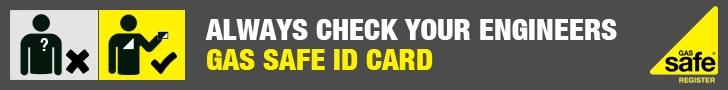

Information Directly from Gas Safe Register
Gas Safe Register
Gas Safe Register is the official list of gas engineers who are qualified to work safely and legally on gas appliances. By law, all gas engineers must be on the Gas Safe Register. It replaced CORGI.
All Gas Safe registered engineers carry a Gas Safe Register ID card. Before any gas work is carried out always check the card and make sure the engineer is qualified for the work you need doing.
Badly fitted and poorly serviced appliances can cause gas leaks, fires, explosions and carbon monoxide poisoning. Carbon monoxide is a highly poisonous gas. You can’t see it, taste it or smell it, but it can kill quickly with no warning.
Always ask for a Gas Safe registered engineer and always ask to see their ID card. If you suspect anyone to be working illegally report them to us. If you have had gas work done in your property in the last six months, you can nominate it for a free gas safety inspection. For more information and to find and check an engineer go to
www.GasSafeRegister.co.uk or call 0800 408 5500. Better Gas Safe than sorry.
Tenants
Landlords have responsibilities for gas safety. All gas appliances provided by the landlord must be correctly maintained and a gas safety check must be carried out every 12 months by a Gas Safe registered engineer.
Remember, if you think a gas appliance is faulty turn it off and let your landlord know immediately. Badly fitted and poorly serviced appliances can cause gas leaks, fires, explosions and carbon monoxide poisoning. If you feel unwell seek medical help immediately.
For more information and to find and check an engineer go to
www.GasSafeRegister.co.uk or call 0800 408 5500. Better Gas Safe than sorry.
Landlords
Landlords are legally responsible for the safety of their tenants. Landlords should make sure maintenance and annual safety checks on gas appliances are carried out by a Gas Safe registered engineer.
Before any gas work is carried out always check the engineers ID card and make sure the engineer is qualified for the work you need doing. Encourage your tenants to do the same.
For more information and to find and check an engineer go to
www.GasSafeRegister.co.uk or call 0800 408 5500. Better Gas Safe than sorry.
How to find an engineer
Gas Safe Register is the official list of gas engineers who are qualified to work safely and legally on gas appliances. By law, all gas engineers must be on the Gas Safe Register. It replaced CORGI.
To make sure that gas appliances such as boilers, fires, ovens and hobs are fitted, fixed and serviced safely, only a Gas Safe registered engineer should carry out the work. If someone other than a Gas Safe registered engineer undertakes gas work, they are breaking the law and could put lives at risk.
To prove they are legally permitted to work on gas, all Gas Safe registered engineers have an ID card with their own unique licence number and a photograph. Those in the building industry must always check that engineers contracted to undertake gas work are on the Gas Safe Register.
To find or check an engineer go to
www.GasSafeRegister.co.uk or call 0800 408 5500.
Gas Safe Register
Gas Safe Register is the official list of gas engineers who are qualified to work safely and legally on gas appliances. By law, all gas engineers must be on the Gas Safe Register. It replaced CORGI. The Gas Safe Register makes sure the engineers on the Register are safe by inspecting the gas work they have carried out.
As Gas Safe registered engineers you can feel safe in the knowledge that we are competent and qualified to work safely and legally with gas. By using a Gas Safe registered engineer you are protecting yourself and your family from incorrectly fitted, fixed and serviced gas appliances. These are a major cause of lethal carbon monoxide poisoning, and can also lead to gas leaks, fires and explosions.
Always ask for our Gas Safe Register ID card and check the back of the card to make sure we are qualified for the work you need. To check our registration details visitwww.GasSafeRegister.co.uk or call 0800 408 5500. Better Gas Safe than sorry.

Dysons Plumbing and Heating is supporting Gas Safe Register’s ‘Let’s Talk Gas Safety’ campaign for the elderly. To find out more visit
www.GasSafeRegister.co.uk/elderlyOlder people's campaign
Overview
Gas Safe Register runs the official list of qualified gas engineers who can legally and safety work on gas appliances. Recent research carried out by Gas Safe Register has identified the over 65 age group as having low awareness levels of gas safety. Therefore, our next public awareness campaign, Let’s Talk Gas Safety, aims to increase the gas safety awareness of this particularly vulnerable audience.
Who?
The campaign will target over 65s. There will be a national roll out as well as a burst of activity in the North East as this area has been identified as being particularly vulnerable and has the highest levels of fuel poverty in this age group.
Why?
From current research we know that there is low gas safety awareness in this age group.
- They are less likely to know there is a gas registration scheme and make proper checks that the engineer is registered, and they are more likely to trust a recommendation or paperwork.
- They have lower knowledge of symptoms of CO and that it can’t be seen or smelt.They are likely to be more vulnerable to the effects of CO poisoning.
- They are vulnerable from a behaviour point of view – they may have a tendency to keep using old appliances, use them in the wrong way, or try to fix them themselves.
- There may be financial constraints and they cannot always afford regular servicing or repairs.
When?
The campaign launched in January 2011.
How?
The Let’s Talk Gas Safety campaign focuses around the conversations older people like to have over a cup of tea and encourages them to talk about gas safety. Gas Safe Register staff will talk with them about gas safety and key messages such as explaining what Gas Safe Register is, to always use a Gas Safe registered engineer, how they can find an engineer, gas safety risks and carbon monoxide information, and the need for annual gas safety checks etc. We’ll encourage them to talk to their engineer and ask for the Gas Safe ID card and talk to each other and pass on gas safety information. We will use various methods, initially through the pilot to see what is effective, including:
- Leafleting – large print leaflets with pertinent gas safety information will be distributed by door drops and partners.
- Advertising – newspaper, magazine and Post Office advertising.
- Community events – We will utilise events to mobilise the older generation to think and talk about gas safety. Talking to them face to face as its one of the best ways to reach this audience. We will hold Gas Safe Tea Party events with local organisations - a chance to talk about gas safety over a cup of tea. There will be a gas safety presentation and giveaways such as tea bags and fridge magnets featuring the ID card.
- Media coverage – High profile PR event to generate media coverage. There will be a news story featuring new research around the elderly to launch the campaign. We will also work with media partners.
How can I help?
- Do you have contact with older people? Can you display posters or distribute leaflets or giveaways?
- Can you put gas safety information on your website or in newsletters, magazines or emails?
- Do you have events for older people e.g. coffee mornings? Could we attend and hold a Gas Safe Tea Party? Could we give a presentation to older people or your organisation?
- Contact marketing@gassaferegister.co.uk for more information.